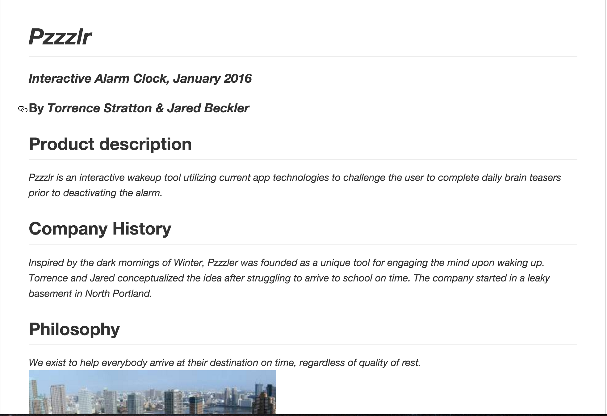
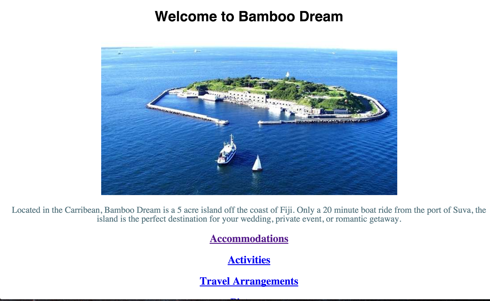
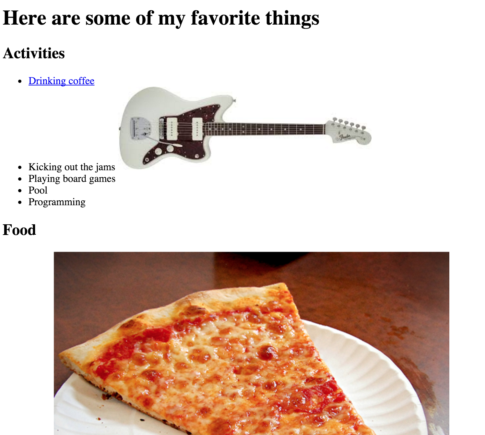
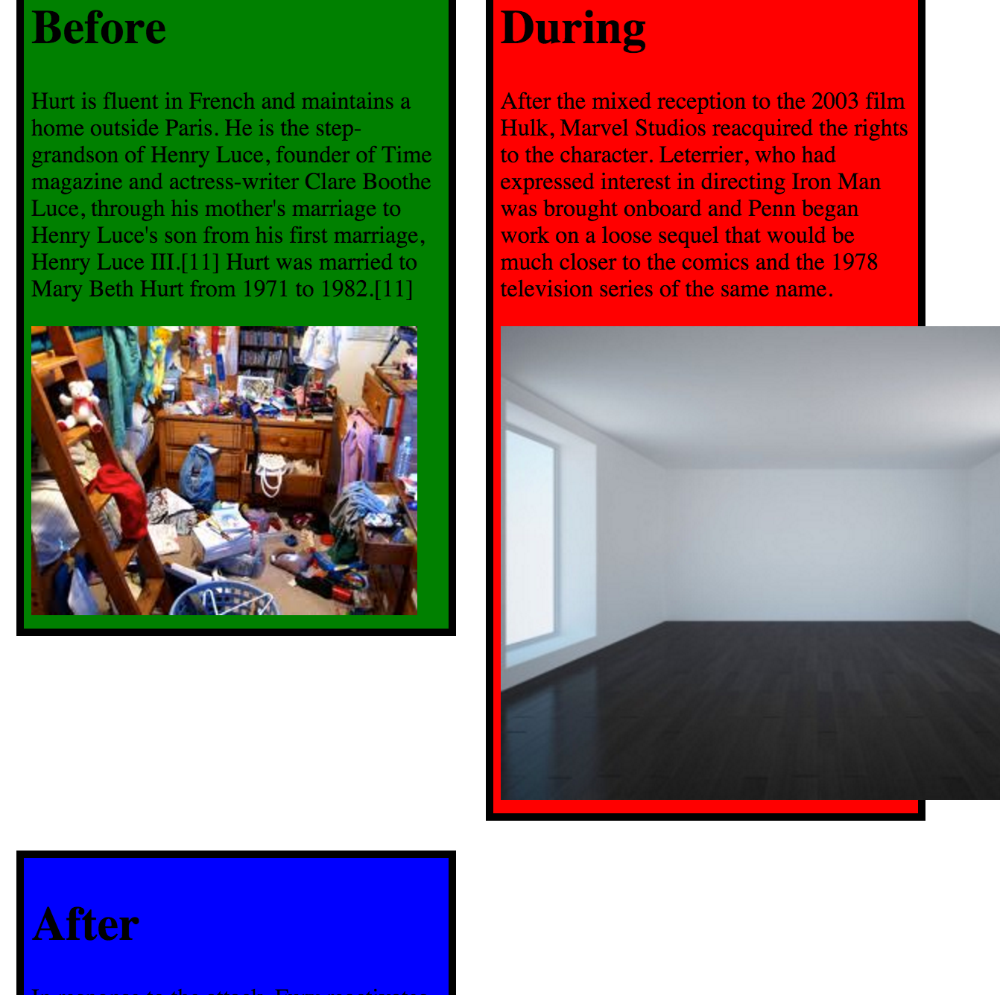
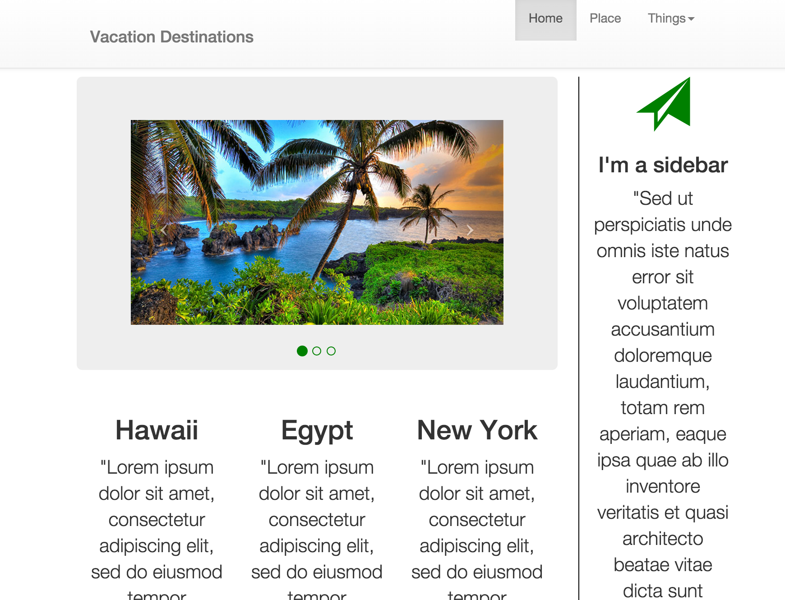

© Jared Beckler 2016


Thanks for taking a look at my portfolio!
I had been drawn to programming/web development for quite some time. I love getting into the nitty-gritty of things and trying to figure out how they work or got made. This, along with success stories from friends who have gone through the school, has brought me to Epicodus.
I have worked in the food service industry for the vast majority of my working life. Doing this has helped me develop an effective way to solve probelms. It has also forced me to be very proactive in thinking about how best to use my time. Both of which I believe will be very beneficial in the programming world.
When I'm not in class I can often be found watching the Trail Blazers, ideally in person, with some friends or doing something along the lines of hiking or biking outside. I am a fan of craft cocktails, microbrews and good food so I'm often trying new places to find my new favorite spot!
This is a quick project done on the first day of class. Written in Markdown, it's a quick "About Us" for a fake company my partner and I came up with.
Click here to check out my Markdown project!
This project was assigned in order to get some basic knowledge and skills in HTML and CSS. We also got used to adding photos to webpages.
Click here to check out my Island project!
Here we got more practice in linking between webpages and images. We also used multipule CSS files to style each page differently.
Click here to check out my project!
This project was intended to teach us about columns. We also played around with the CSS file to see what we could do to syle the columns.
Click here to check out my Column project!
In this project we dove into Bootstrap and used that to style our page and got even more familiar with classes and IDs.
Click here to check out my Vacation Bootstrap project!

© Jared Beckler 2016